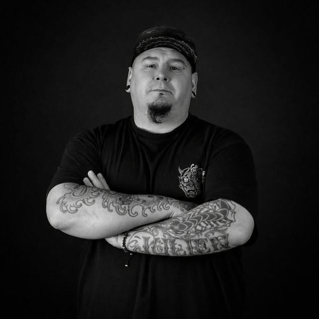

Interface & front-end
HTML, CSS, JavaScript, responsive design et intégration soignée pour construire des expériences rapides, accessibles et agréables à parcourir.
Développeur web mobile · Design graphique · Communication digitale
Je conçois des interfaces vivantes, lisibles et mémorables, avec l'œil du designer, la rigueur du développeur et l'énergie d'un créatif qui aime transformer les idées en expériences.

Ancien boulanger reconverti dans le numérique, je garde le sens du geste précis : structurer, composer, tester, améliorer. Aujourd'hui, je relie développement front-end, identité visuelle et communication digitale pour créer des supports utiles, beaux et cohérents.
HTML, CSS, JavaScript, responsive design et intégration soignée pour construire des expériences rapides, accessibles et agréables à parcourir.
Photoshop, Illustrator, affiches, visuels réseaux sociaux, bannières et identités : je donne une direction visuelle claire aux projets numériques.
Je pense les contenus pour leur contexte : message, cible, canal, lisibilité et impact. Le design sert toujours une intention.
Un projet ludique qui met en avant logique d'interface, rythme de jeu, responsive et interactions dynamiques.
Voir le projetPage éditoriale travaillée autour d'un sujet fort, avec une attention portée à la hiérarchie de l'information.
Voir le projetRéalisation orientée gameplay, logique utilisateur et précision des interactions.
Voir le projetSite vitrine clair, rassurant et orienté prise de contact pour une activité locale.
Voir le projetProjet web à identité marquée, pensé pour créer une ambiance et structurer un contenu passion.
Voir le projetProfil orienté front-end, design d'interface et communication numérique.